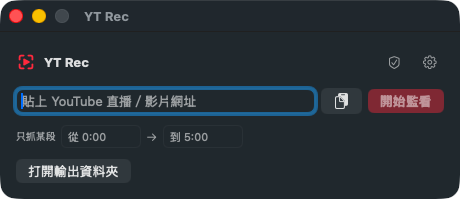

六小時的直播不用整段下載、也不用佔住螢幕乾等。開錄後電腦照常工作，只錄那一個直播視窗，連聲音都不會混到別的 App。直播或一般 YouTube 影片都能錄。
macOS 14.4+ · Apple Silicon | Windows 版開發中

6–8 小時的直播邊播邊錄，不用等它整段跑完。
開錄後螢幕照用，疊在上面的視窗不會被錄進去。
進行中就錄到手，當下就有完整檔案。
| 傳統螢幕錄影 | YT Rec | |
|---|---|---|
| 錄什麼 | 整個螢幕 | 只錄那一個直播視窗 |
| 能同時工作嗎 | 不能，螢幕被佔住 | 能，疊在上面的視窗不會被錄 |
| 其他 App 的聲音 | 會一起混進去 | 排除，只收該視窗的聲音 |
| 看得到在錄什麼嗎 | 看得到，但佔住螢幕 | 可移動、可置頂的小監看視窗 |
| 超長直播 | 檔案爆大、容易壞 | 抗崩潰切片＋磁碟／時長保護 |
把 YouTube 直播連結貼進去，按「立即開錄」。它會自動判斷是進行中直播還是已結束影片。
一個浮動小窗顯示正在錄的畫面，可置頂、可縮到背景。你照常用電腦，疊在上面的視窗不會被錄進去。
錄到的就是一個完整檔案，存在你指定的輸出資料夾，之後要怎麼用都隨你。
用 ScreenCaptureKit 只錄那一個直播視窗的內容，其他視窗疊上去也不會被錄進去。
只錄那個直播視窗的音訊，電腦其他 App 的聲音、通知音都不會混進去——已實機驗證零殘留。
可移動、可縮放、可置頂的小窗，隨時確認在錄對的串流、沒有黑畫面或卡住。不想盯著可一鍵縮到背景。
貼進行中的直播就自動螢幕側錄；貼已結束的一般影片就直接抓原始檔，更快、畫質更好。它幫你判斷，你不用選。
fMP4 分段切片＋磁碟與時長保護，6–8 小時、24hr 台也錄得住，意外當機也保得住已錄段落。
macOS 用 Swift／SwiftUI，Windows 用 C#／.NET——各自原生實作，不是套殼，效能與穩定度到位。
YT Rec 以 Apache-2.0 授權釋出。兩個平台各自原生實作，靠一份共享的「行為規格」與驗收測試保持一致——程式碼公開，歡迎檢視、回報問題與貢獻。
「YT Rec」名稱與圖示為商標。請只用於錄製你有權錄製、或合理使用範圍內的內容。